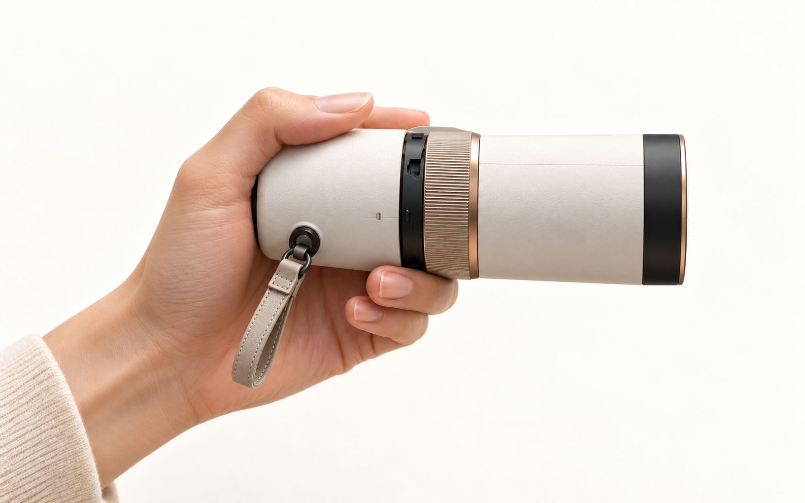
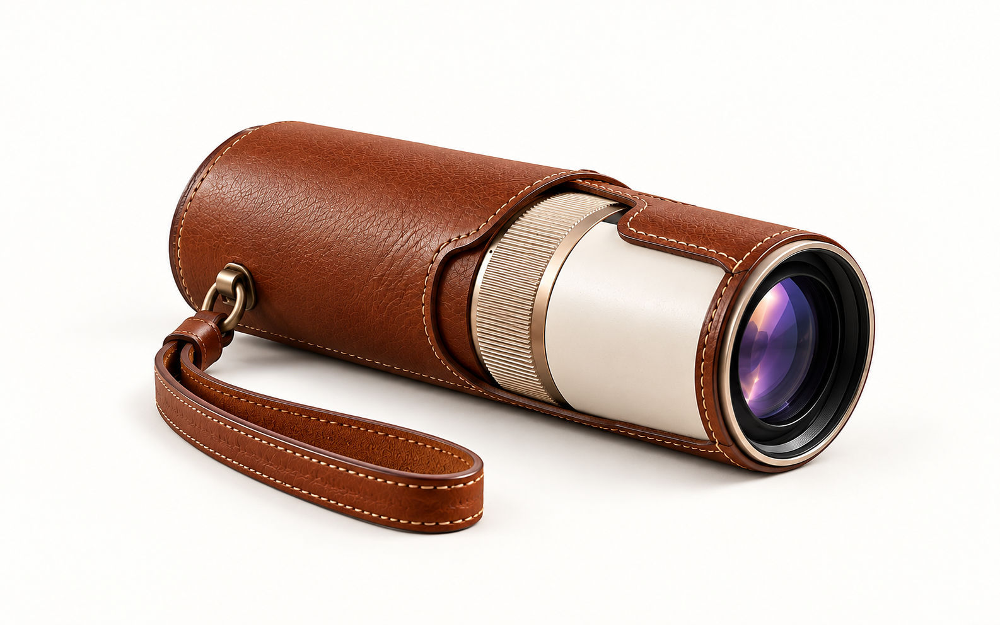
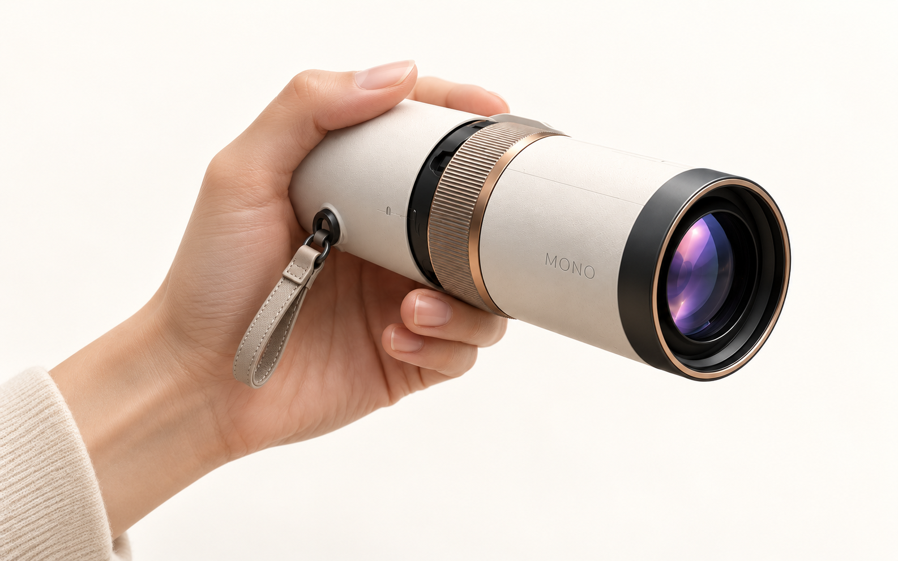
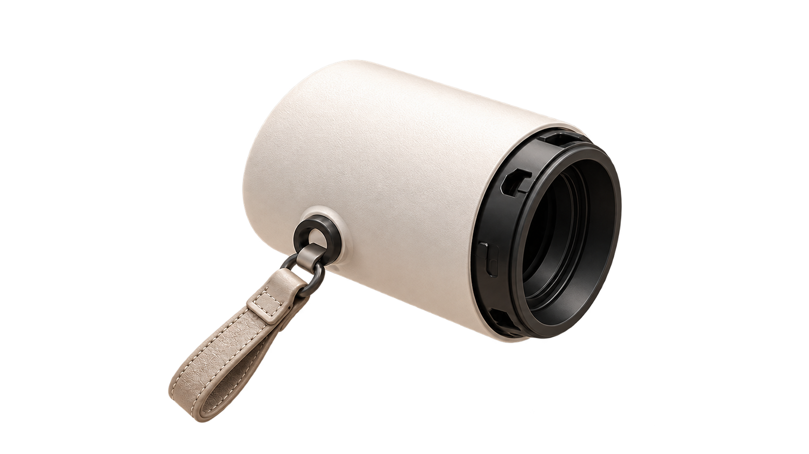
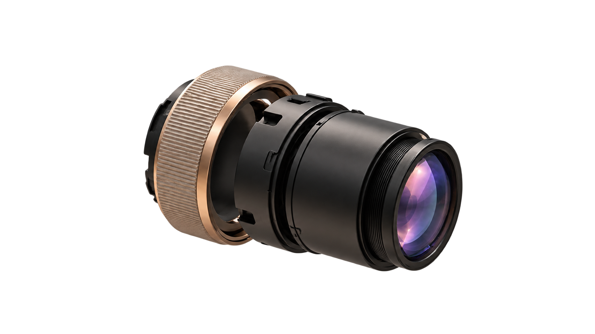
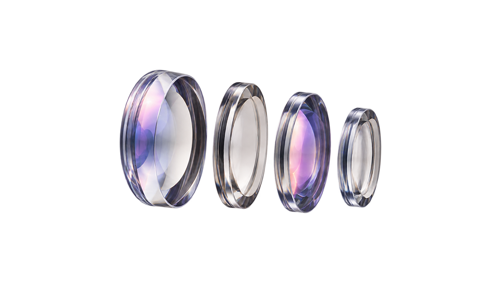
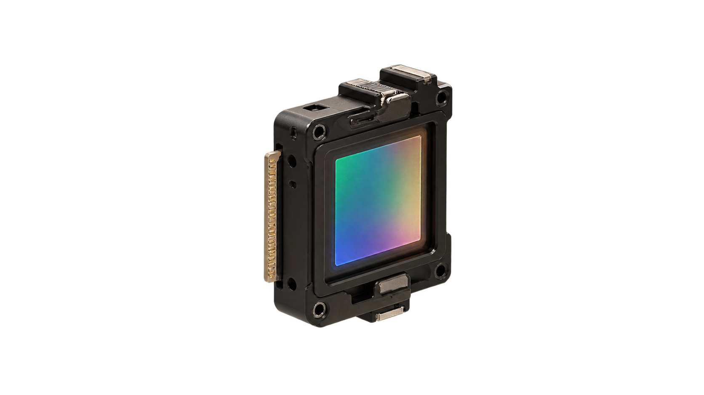

LANDMARK · 8.6 KM
XR SCOPE · 01
A new way
to look closer.
발견하는 순간, 세상이 더 가까워진다.

PRODUCT FILMSCROLL TO TURN
Scroll to discover
PHYSICAL × DIGITAL
Turn the ring.
Reveal the unseen.
익숙한 풍경을 향해 들어 올리고, 눈에 대고, 링을 돌리세요. MONO는 광학적 확대 위에 장소와 사물의 맥락을 겹쳐 보여줍니다.
OPTICAL MOTION · 01.5
Light becomes
information.
Scroll through the optical pathREC · MONO OPTICS00:06
LOOK THROUGH MONO · 02
Not a screen.
A new sight.
렌즈를 선택해 안으로 들어가세요.
LIVE OPTICSNORDIC COAST · 20:14
01
NORTH RIDGE8.6 KM
02
HARBOR FERRY0.8 KM
A coastal ridge shaped by glacial movement, now a natural reference point above the active harbor.
SCENIC ROUTE42 MIN
1×REALITY
SCROLL TO ZOOM · DRAG TO EXPLORE
ONE NATURAL MOTION · 03
From noticing
to knowing.
- 01CARRY
손이 닿는 곳에 가볍게.
- 02FIND
시선이 머무는 순간.
- 03LOOK
눈앞에 들어 올리고.
- 04ZOOM
익숙한 링을 돌려.
- 05DISCOVER
보이지 않던 맥락까지.
FIELD FILM · 03.5
A gesture
becomes discovery.
스크롤해 하나의 장면을 따라가세요.

01 · CARRY
Ready when you notice.
가볍게 지니고, 발견하는 순간 꺼냅니다.
02 · LIFT · MOTION
MOTION · 06 SECOne continuous gesture.
들어 올리는 동안 제품의 시선도 풍경을 향합니다.

03 · LOOK
Bring distance closer.
눈에 대는 순간 주변은 사라지고 대상만 남습니다.

04 · ZOOM
Turn to reveal.
링의 회전이 확대와 공간 정보를 함께 깨웁니다.
01/ 04
DESIGNED TO BE HELD · 04
Every angle,
considered.
드래그해서 MONO를 돌려보세요.
VIEW000°
LIVE 3DDRAG · TILT · ZOOM
DRAG ANY DIRECTION

FULL-GRAIN LEATHER · MAGNETIC FITDETACHABLE LEATHER SLEEVE · 05
Make it yours.
Remove it anytime.
부드럽게 감싸고, 필요할 때 한 번에 분리되는 풀그레인 레더 슬리브.
EXPLORE MONO · 05.5
Take a closer look.
DESIGN
Designed to be held.
손에 자연스럽게 안착하는 균형 잡힌 실루엣과 매트 아이보리 마감.

INSIDE MONO · 06
Complex inside.
Effortless outside.






01
MONO ASSEMBLEDSCROLL TO SEPARATE

MONO XR SCOPE